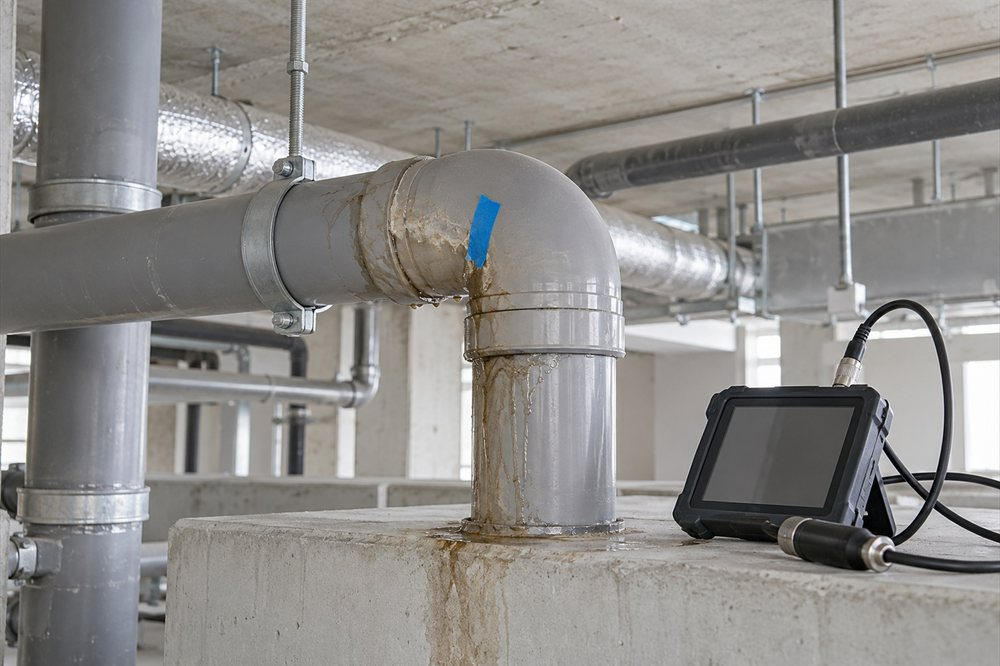
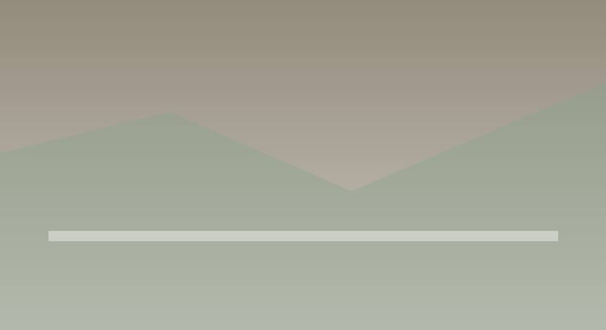
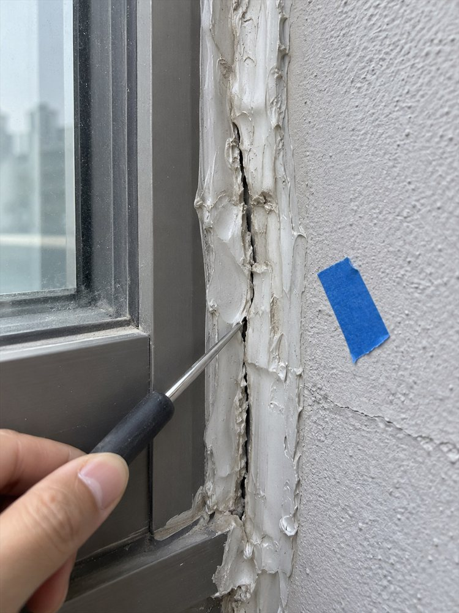
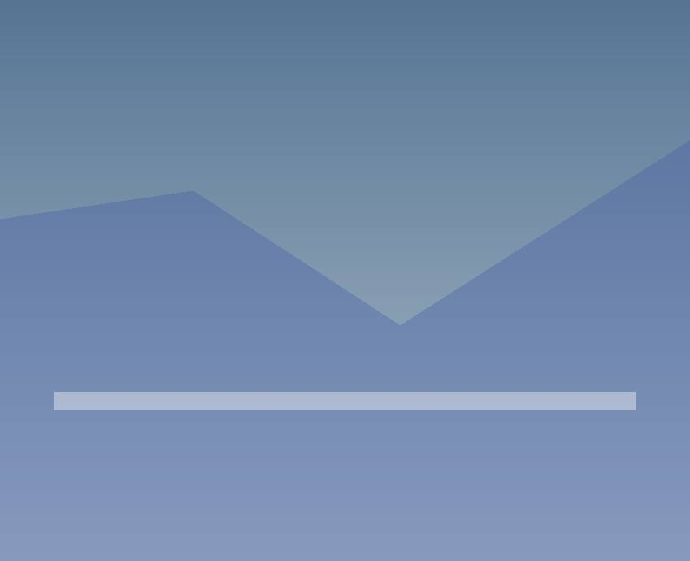
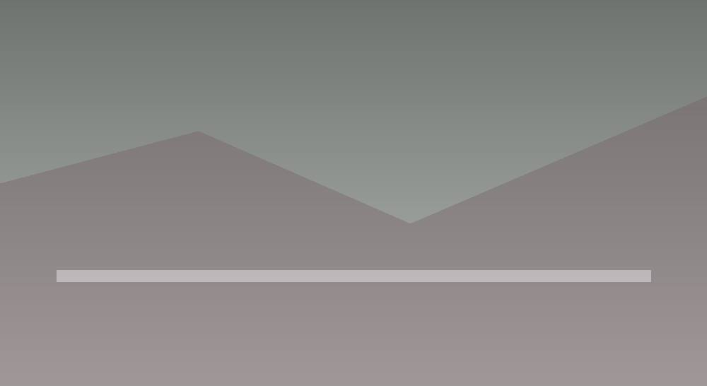
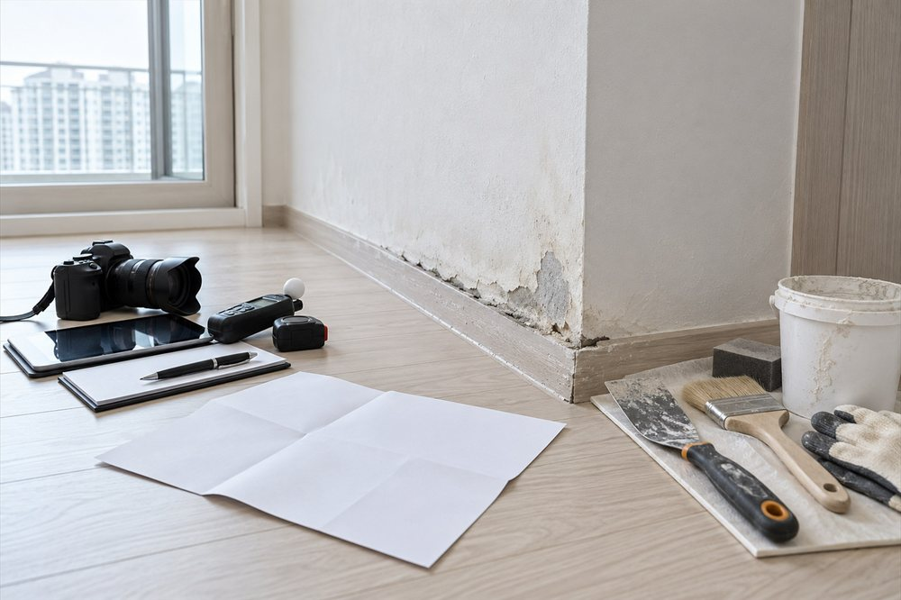
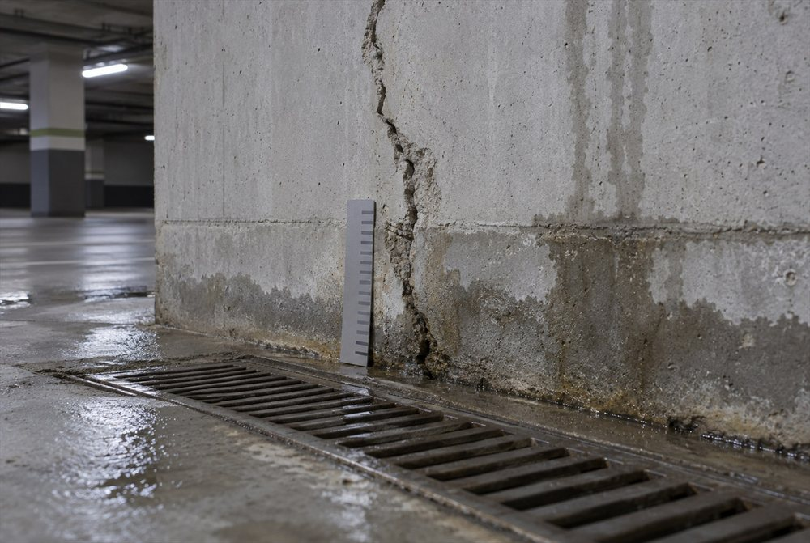
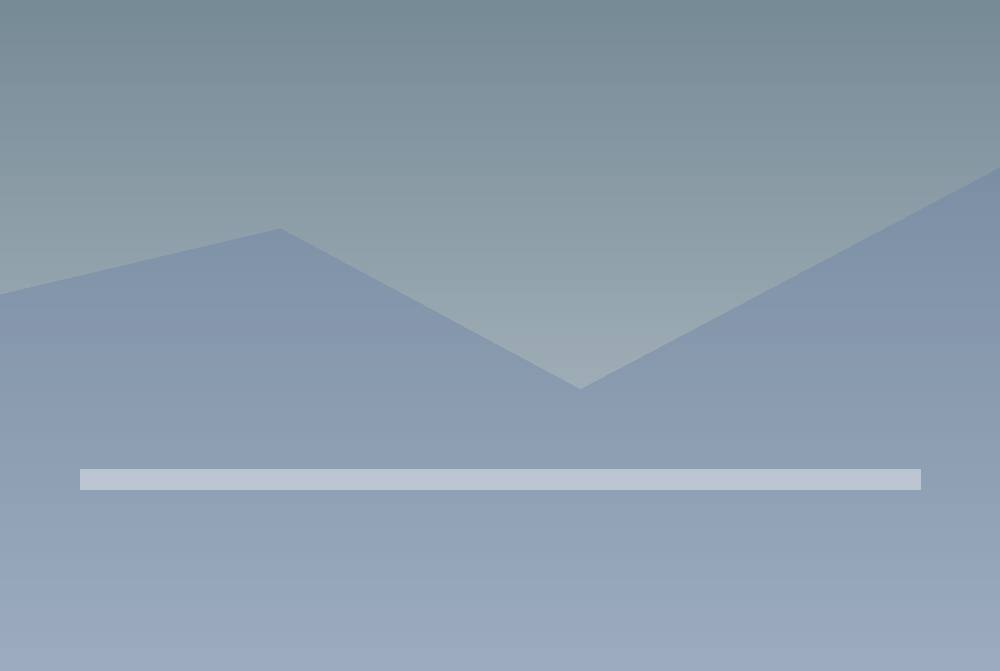
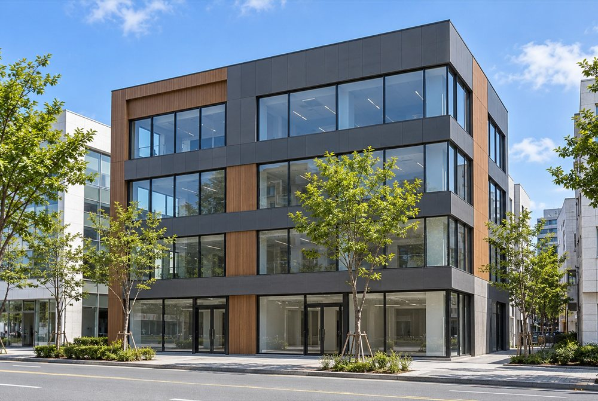

하자소송
소송에 쓸 하자를 빠짐없이 모으고
근거를 갖추는 과정
하자소송이란?

새 건물에 부실 시공이나 도면과 다른 시공으로 생긴 결함이 있는데 시공사가 고쳐 주지 않을 때, 돈으로 물어내라고 청구하는 법적 절차예요.
하자소송 필요 상황
보통은 진단 결과를 들고 시공사에 보수를 요청하고, 그래도 받아들이지 않으면 마지막으로 소송을 택하게 됩니다.

누가 봐도 하자인데 '정상 범위'라며 넘어가거나, 사람이 없다는 이유로 보수 날짜를 끝없이 미루는 경우

원인은 그대로 둔 채 실리콘 덧바르기 같은 임시 보수만 되풀이해서, 같은 자리에 결함이 계속 남는 경우

단열재가 빠지거나 배관이 규격보다 작은 것처럼 눈으로는 알기 어려운 빠진 시공·바뀐 시공에 대해, 공사비 차이만큼 물어내라고 해야 할 때

시공사 형편이 나빠져 고칠 능력이 없어졌거나, 시행사와 시공사가 서로 책임을 넘기면서 입주민 피해를 내버려 둘 때
협의로 끝낼까, 소송으로 갈까
보수 협의는 진단 내역을 들고 건설사와 이야기해 푸는 방법이에요. 시공사가 하자마다 언제까지 고칠지 날짜를 정하고 그 안에 마칩니다.
소송은 앞에서 본 것처럼 시공사가 협의나 보수를 피할 때 꺼내는 카드입니다.

소송 전에 챙길 세 가지
도면과 실제 시공을 비교해 빠진 시공, 바뀐 시공을 분명하게 찾아내야 해요. 기능이나 보기에 생긴 하자까지 근거로 증명해 두어야 상대가 책임을 피하려 할 때 막을 수 있습니다.
공사별 담보책임기간과 소멸시효가 지나면 배상을 받아 내기 어려워질 수 있어요. 소를 내는 날이 기간 안인지 변호사와 확인하고, 소장 접수와 채권양도 통지를 기한 안에 끝내야 합니다.
입주자대표회의나 관리단이 한꺼번에 청구하려면, 각 소유자가 가진 손해배상청구권을 넘겨받는 채권양도가 필요해요. 양도했다는 통지가 시공사나 사업주체에 닿아야 양도를 내세울 수 있고, 통지 방법은 변호사와 정합니다.
하자소송 주요 쟁점
소송에서는 책임이 어디까지인지, 기한이 지났는지, 권리를 누가 넘겨받았는지, 쓰는 쪽 잘못은 없는지 같은 쟁점을 두고 다투게 돼요.
| 구분 | 주요 쟁점 | 대응 방향 |
|---|---|---|
| 책임 범위 | 설계와 어긋나게 지은 곳 전부 | 준공도면과 하나하나 맞춰 빠진 곳·잘못 지은 곳 모두 찾기 |
| 시효 관리 | 해마다 끝나는 공사별 보수 기간 | 끝나기 전에 소를 내거나 시효를 멈추는 조치 |
| 권리 승계 | 각 세대의 청구권을 입주자대표회의로 넘기기 | 입주민에게 양도 절차를 안내하고 참여 이끌기 |
| 과실 상계 | 관리를 소홀히 했거나 잘못 써서 생긴 건 아닌지 | 공사 잘못과 관리 부실을 원인별로 가르기 |
하자소송 시설물 유형

입주자대표회의가 나서서 집 안 마감 부실과 공용 공간 기능 문제를 한데 묶어 큰 규모로 대응해요.
뼈대 균열, 지하주차장 누수, 빠진 소방 설비, 조경 하자 등

소유자들의 의결권을 모아 관리단을 꾸리고, 기산일 전후로 생긴 하자를 나눠 진단해 책임을 묻는 게 중요합니다.
결로와 곰팡이, 창틈 바람, 주차타워 고장, 옥상 방수 결함 등

층고가 모자라거나 기계 설비 성능이 못 미쳐 장사에 지장을 준 경우, 그 시공 위반으로 생긴 경제적 손해를 받아 내는 데 힘을 모읍니다.
뼈대 하자, 냉난방 설비 용량 부족, 하수관 기울기 불량, 전기 인입 용량 미달, 얇은 도장
온하임의 소송 기술 지원
온하임은 진단 자료로 시공사와 협의할 수 있게 돕는 안전진단 전문기관이에요.
진단부터 소송 자료까지
소송에서 가장 중요한 건 하자를 기술적으로 증명하는 일이에요. 건물 품질 상태를 진단해 재판에서 쓸 근거를 만들어 드립니다.

진단은 이렇게 진행돼요
법원 감정 때 빠지는 하자가 없도록 감정 쟁점에 맞춰 진단하고, 재판부에 낼 객관적인 증거를 갖춥니다.
기존 도면과 공사별 보수 기간 이력을 살펴 청구할 하자 고르기
비파괴 장비·디지털 측정기로 공용 공간과 세대 안 결함을 재 소송용 하자 목록 만들기
구조 검토와 도면 대조로 법원 감정에 낼 기술 의견 준비
도장 찍힌 진단 보고서와 법정에 낼 기술 자료 발급
궁금한 점을 한곳에 모았어요
- Q
소송하는데 진단이 꼭 먼저 있어야 하나요?
 A소송에서는 원고 쪽이 어떤 하자가 어디에 얼마나 있는지 주장하고 증명해야 해서 진단이 받쳐 줘야 합니다. 변호사가 소장과 감정 신청서를 쓸 때 붙이는 기술 근거는 현장 사진, 측정 자료, 원인 분석, 보수비 산출 자료로 이뤄져요. 소송 전에 도면·시방서를 현장과 맞춰 보는 진단을 끝내 두면 청구할 하자 목록을 정할 수 있고, 법원 감정에서 조사 항목이 빠지는 것도 막을 수 있습니다.
A소송에서는 원고 쪽이 어떤 하자가 어디에 얼마나 있는지 주장하고 증명해야 해서 진단이 받쳐 줘야 합니다. 변호사가 소장과 감정 신청서를 쓸 때 붙이는 기술 근거는 현장 사진, 측정 자료, 원인 분석, 보수비 산출 자료로 이뤄져요. 소송 전에 도면·시방서를 현장과 맞춰 보는 진단을 끝내 두면 청구할 하자 목록을 정할 수 있고, 법원 감정에서 조사 항목이 빠지는 것도 막을 수 있습니다. - Q
보수 기간이 소송 결과를 좌우하나요?
A어떤 항목을 청구할 수 있느냐는, 그 하자가 담보책임기간 안에 생겼는지, 기간 안에 권리를 썼는지로 갈려요. 공동주택관리법상 사업주체는 기간 안에 생긴 하자에 대해 보수와 손해배상 책임을 지고, 집합건물법은 주요구조부·지반 하자는 10년, 나머지는 5년 범위에서 권리를 쓰도록 정합니다. 소송 준비 단계에서는 공사 종류, 생긴 시점, 보수 청구 이력을 기간별로 나눠 정리하고, 권리 행사 기간과 소멸시효 판단은 변호사가 맡아요. (근거: 공동주택관리법 제36조·제37조, 집합건물법 제9조의2) - Q
법원 감정에서 보수비는 어떻게 계산하나요?
A법원이 정한 감정 사항에 맞춰 감정인이 하자마다 고치는 방법과 물량을 정하고 단가를 곱해 보수비를 냅니다. 공동주택 하자판정기준은 보수비를 재료비, 노무비, 경비와 간접비, 부가세로 나눠 표준품셈을 따라 셈하게 하고, 공동주택관리법은 소송의 손해배상을 셀 때도 이 기준을 쓸 수 있게 했어요. 바꾸거나 고치지 않으면 쓰기 어려운 하자는 다시 시공하는 비용으로, 고치는 데 돈이 지나치게 드는 가벼운 하자는 가치 차이나 시공비 차이로 셈하는 식으로 정도에 따라 방법도 달라집니다. (근거: 민사소송법 제335조, 공동주택관리법 제37조, 공동주택 하자판정기준) - Q
조사 시기는 언제가 좋을까요?
A입주 초에 한 번, 그리고 공사별 기간이 끝나기 적어도 6개월 전에 다시 시작하는 게 좋아요. 마감에 쫓겨 조사하면 보수 청구를 할지 소송을 할지 정할 시간이 모자라거든요. 시공사가 보수하기 전 상태를 기록으로 남겨 두고, 보수가 끝난 뒤에도 하자가 다시 생기는지 추가 조사로 남겨 두세요. - Q
소송용 조사에는 어떤 장비를 쓰나요?
A현장에서 기본으로 쓰는 건 열화상 카메라와 레이저 수평기이고, 필요하면 철근 탐사기나 슈미트해머를 더해요. 레이저 수평기로 벽이 얼마나 기울었는지 잡고, 열화상 카메라로 안 보이는 속 누수나 빠진 단열을 찾습니다. 소송에 대비한다면 측정 방법에 이의가 나오지 않도록 잰 날짜·조건·위치를 사진으로 남기고 원본 파일까지 잘 보관해 두셔야 해요. - Q
소송을 걸어 놓고 협상도 같이 할 수 있나요?
A네, 소송 중에도 시공사와 협상할 수 있어요. 협상이 되면 소를 거두거나 법정에서 화해해 사건을 끝내는데, 변론조서에 적힌 화해는 확정판결과 같은 힘이 있고, 상대가 본안에 대해 준비서면을 냈거나 변론을 한 뒤라면 소를 거둘 때 상대 동의가 필요합니다. 법원이 스스로 화해권고결정을 내려 합의를 권하기도 해요. 합의서에 넣을 하자 목록과 보수비는 진단 자료로 정리하고, 이행 기한과 남은 청구를 어떻게 처리할지는 변호사와 확인하세요. (근거: 민사소송법 제220조·제225조·제266조) - Q
소송까지 가지 않고 합의로 풀고 싶다면요?
A진단으로 하자 목록, 고치는 방법, 비용을 먼저 정리하고 그걸 들고 시공사와 이야기하세요. 공동주택이면 사업주체는 청구받은 날부터 15일 안에 고치거나, 고칠 부위·방법·기간을 적은 하자보수계획을 서면으로 알려야 해요. 이 계획을 받아 진단 결과와 항목마다 맞춰 보면 협의가 훨씬 구체적이 됩니다. 합의서에는 무엇을 고칠지, 언제 끝낼지, 끝난 뒤 어떻게 확인할지, 합의로 정리되는 권리가 어디까지인지 적어 두어야 나중에 소송으로 번지는 일을 줄여요. (근거: 공동주택관리법 시행령 제38조) - Q
보수 기간은 공사마다 어떻게 나뉘나요?
A아파트 같은 공동주택은 공동주택관리법에 따라 하자가 생긴 부위와 공사 종류마다 기간을 따로 셉니다. 내력구조부는 10년이고, 시설공사는 마감 2년, 창호·단열·전기·소방시설 3년, 철근콘크리트·방수·지붕 5년이에요. 세대 안은 입주자에게 넘겨준 날, 공용 공간은 사용검사일부터 세니까 같은 하자라도 자리에 따라 끝나는 날이 달라질 수 있어요. 소송 기술 지원에서는 청구할 하자마다 어느 공사인지, 언제 끝나는지 표로 정리해 변호사에게 넘깁니다. (근거: 공동주택관리법 제36조, 같은 법 시행령 제36조·별표 4) - Q
이기고 나면 보수비는 어떻게 받나요?
A판결이 정한 손해배상금과 지연손해금을 시공사나 사업주체가 원고에게 주는 식으로 받습니다. 상대가 알아서 주지 않으면 확정판결이나 가집행 선고가 붙은 판결에 집행문을 받아 강제집행을 신청할 수 있고, 실제로 얼마를 받아 낼지는 상대 재산 형편에 달려 있어요. 공동주택이면 사업주체가 보수를 안 할 때 판결서를 붙여 하자보수보증금을 청구하는 길도 있고, 받은 돈을 보수 공사에 어떻게 쓸지는 채권양도·위임 약정과 내부 의결로 정합니다. (근거: 민사집행법 제24조·제28조, 공동주택관리법 시행령 제44조) - Q
조사 보고서는 재판 중 언제, 어떻게 쓰이나요?
A소를 낼 때 원고 쪽 증거로 내서 어떤 하자가 어디 있는지 보여 주는 바탕 자료가 돼요. 그다음 법원 감정을 신청할 때는 감정할 하자 목록과 위치를 정하는 근거로 쓰고, 감정 결과에 빠졌거나 다르게 본 항목이 있으면 보고서와 비교해 의견을 냅니다. 법원은 감정 결과에 대해 당사자에게 의견을 말할 기회를 주니까, 그때 보고서 사진과 측정값이 구체적일수록 설명하기 쉬워요. (근거: 민사소송법 제339조) - Q
원인이 무엇이냐에 따라 배상액이 달라지나요?
A네, 원인에 따라 보수비를 어떻게 셈하고 얼마를 빼는지가 달라지거든요. 빠진 시공이나 바뀐 시공 때문에 다른 하자가 생길 위험이 크면 다시 시공하는 비용으로, 위험이 작으면 시공비 차이로 셈하라고 공동주택 하자판정기준이 정해 둡니다. 자연스럽게 낡았거나 관리를 잘못해서 생긴 부분은 배상액에서 일정 비율을 뺄 수 있어서, 공사 잘못과 관리 문제를 나눠 설명하는 자료가 필요해요. 소송 기술 지원에서 원인별 보수 방법과 그 근거를 정리해 드립니다. (근거: 공동주택 하자의 조사, 보수비용 산정 및 하자판정기준) - Q
소송에서 밀리지 않으려면 지금부터 무엇을 해 둬야 하죠?
A하자를 처음 본 날부터 기록을 남기세요. 하자 사진, 보수 요청 내용, 시공사 답변을 날짜순으로 모으고, 실제로 고쳤다면 그 내용도 이어서 적어 둡니다. 숫자로 잰 자료는 어디서 어떤 방법으로 쟀는지 알 수 있어야 하니 날짜와 위치가 표시된 원본 파일을 보관해 두세요. 나중에 변호사와 쟁점을 정할 때 공급계약서, 설계도서, 조사 자료를 같이 보면 진단을 어디까지 할지도 구체적으로 정해집니다. - Q
보수를 거절당하면 다음 단계는 무엇인가요?
A거절 이유를 서면으로 받아 두고, 진단 자료로 반박해 다시 청구하세요. 그래도 안 풀리면 조정이나 소송으로 넘어갑니다. 공동주택은 국토교통부 하자심사 분쟁조정위원회에 조정을 신청할 수 있고, 조정안을 받아들여 만든 조정서는 재판상 화해와 같은 힘을 가져요. 조정이 안 되거나 판결이 필요하면 변호사를 통해 소를 내고, 온하임은 소장과 감정 신청에 쓸 하자 목록과 보수비 자료를 기술적으로 뒷받침합니다. (근거: 공동주택관리법 제39조·제44조) - Q
보고서가 법정에서 얼마나 힘을 갖나요?
A재판에서 증거로 쓸 수 있고, 얼마나 믿을지는 법원이 다른 증거와 함께 판단해요. 민사소송법은 법원이 변론 전체의 취지와 증거조사 결과를 보고 자유롭게 사실을 판단하게 하므로, 당사자가 낸 보고서는 법원 감정 결과나 상대 자료와 나란히 검토됩니다. 조사 방법과 측정 근거가 분명하고 작성자 서명·날인이 있는 보고서일수록 설득력이 커요. 온하임은 소송용 보고서에 조사 근거, 측정 자료, 날인을 갖춰 발급합니다. (근거: 민사소송법 제202조) - Q
소송 전 진단 비용은 무엇으로 정해지나요?
A얼마나 넓은 건물인지, 몇 세대인지, 소송에서 어떤 하자까지 다툴지, 어떤 장비를 쓸지를 보고 금액을 잡아요. 소송용 조사는 청구할 하자를 빠짐없이 찾고 보수비 산출과 날인한 보고서까지 갖춰야 해서, 같은 건물이라도 범위에 따라 일의 양 차이가 큽니다. 법원 감정 현장 참여나 감정 결과 검토 의견서처럼 소송 중에 생기는 일은 따로 정하고, 변호사 보수나 인지대 같은 소송 비용은 기술 용역비와 별도예요. - Q
외벽이 떨어지는 것처럼 위험한 하자는 무엇부터 하나요?
A사람이 다칠 수 있는 하자는 배상을 따지기 전에 현장부터 안전하게 해야 해요. 위험한 곳에 사람이 못 들어가게 막고, 관리주체와 시공사에도 바로 알리세요. 정리되기 전에 안전한 자리에서 떨어진 부분과 주변을 사진으로 남겨 두는 게 좋습니다. 급하게 고쳤다면 고치기 전후 모습, 왜 급했는지, 든 비용까지 적어 두고, 나중에 조사할 때 고정 철물과 앵커가 어떻게 시공됐는지 도면과 비교해 원인을 확인해요. - Q
규모가 큰 건물도 소송 지원을 받을 수 있나요?
A네, 됩니다. 온하임에는 건축뿐 아니라 토목 기술자도 있어 건물 본체와 옹벽 같은 토목 시설 하자를 함께 조사할 수 있어요. 규모가 크면 공용 공간 조사와 세대 표본 조사를 나눠 계획하고, 상가나 지식산업센터처럼 공동주택이 아닌 건물은 집합건물법 등 해당 법에 맞춰 청구 항목을 정리합니다. (근거: 집합건물법 제9조) - Q
소송을 도와줄 진단 업체는 어떻게 고르나요?
A안전진단전문기관처럼 법에 등록된 법인인지, 법원 감정에 대응할 기술자를 직접 두고 있는지부터 보세요. 보고서 예시를 받아 사진, 측정값, 원인 분석, 보수비 근거가 하자마다 이어져 있는지 살피고, 실제 현장 담당자와 계약 범위도 비교합니다. 소송 대리와 법률 판단은 변호사 일이니, 기술 지원 업체가 맡을 범위와 나눠 계약서에 적어 두셔야 해요. - Q
빠진 시공이나 바뀐 시공은 무엇으로 증명하나요?
A사용검사를 받은 최종 설계도서와 실제 현장을 항목마다 맞춰 증명합니다. 하자판정기준도 이 설계도서를 기준으로 하자인지 보고, 결로가 생긴 자리는 마감재를 뜯어 단열재가 빠졌는지, 바꿔 썼는지 확인하는 방법을 정해 두었어요. 배관을 작게 바꾼 것처럼 마감 안에 숨은 항목은 일부를 뜯거나 장비로 확인하고, 도면의 해당 부분과 현장 사진, 측정값을 나란히 정리해 증거로 냅니다. (근거: 공동주택 하자의 조사, 보수비용 산정 및 하자판정기준) - Q
판결 뒤 보수 공사에도 기술자가 붙어야 하나요?
A판결금으로 하는 공사가 인정된 하자를 정말 해결하는지 확인해야 해서예요. 원인은 두고 겉만 덮는 공법을 쓰면 같은 하자가 또 생겨도, 이미 배상받은 항목이라 다시 청구하기 어렵습니다. 그래서 공법이 원인에 맞는지 검토하고, 공사 전후 상태를 재서 나아졌는지, 남은 문제는 무엇인지 항목별로 정리해요. - Q
온하임은 소송을 어떻게 돕나요?
A온하임은 안전진단전문기관이자 구조엔지니어링 회사로서 특급·고급 기술 인력이 직접 소송용 기술 조사를 맡습니다. 청구할 하자를 고르려고 도면과 보수 기간 이력부터 분석하고, 비파괴 장비로 공용 공간과 세대 안 결함을 재요. 법원 감정 쟁점에 맞춰 도면대로 지었는지 따져 본 뒤, 날인한 소송용 보고서와 재판에 낼 기술 자료를 발급합니다. 소송 대리는 의뢰인이 고른 변호사가 맡고, 온하임은 이 기술 자료로 소송을 받칩니다. - Q
감정인은 어느 편에 서나요?
A어느 편도 아닙니다. 재판부가 정한 전문가로, 원고가 말한 하자가 있는지, 원인과 보수비는 어떤지 조사해 감정서로 법원에 알려요. 법원 판단을 돕는 역할이라, 원고와 피고 모두 결과가 나오면 서면이나 말로 의견을 낼 수 있습니다. 소송 기술 지원에서는 감정할 하자 목록을 미리 정리해 두고, 결과에 빠진 하자나 다르게 계산된 보수비가 없는지 검토 의견을 준비해요. (근거: 민사소송법 제335조·제339조) - Q
아파트 소송에서 기술 자료는 언제언제 필요한가요?
A소를 내기 전, 감정 신청 때, 감정서 검토 때, 판결 뒤 보수 공사 때, 이렇게 네 번 다른 쓰임으로 필요해요. 소를 내기 전에는 청구할 하자와 세대를 고를 조사 결과가 있어야 하고, 감정을 신청할 땐 감정받을 사항을 적은 서면을 함께 내야 하니 하자 항목과 위치를 그 서면에 맞게 다시 묶습니다. 감정서가 나오면 법원이 기한을 정해 의견서를 받거나 감정인에게 물을 사항을 서면으로 받기도 해서, 사전 조사와 감정서가 다른 부분을 항목별 표로 준비해 둬요. 판결이나 화해로 끝난 뒤에는 보수 공법이 인정된 원인에 맞는지 검토할 자료가 쓰이고, 소송 대리와 법률 판단은 변호사가, 단계별 기술 자료는 온하임이 맡습니다. (근거: 민사소송규칙 제101조·제101조의3) - Q
법원 감정인이 세대를 방문할 때는 무엇을 준비하나요?
A감정인이 정한 조사 기간에 맞춰 대상 세대의 출입 일정을 미리 잡아 두는 데서 시작해요. 입주자대표회의나 관리사무소가 세대마다 가능한 시간과 연락처를 모으고, 집을 비우는 세대는 대신 문을 열어 줄 사람을 정해 두면 빠지는 세대가 줄어듭니다. 소송 전 조사 목록과 사진은 민사소송규칙에 따라 법원에 내거나 법원 허가를 받아 감정인에게 넘긴 자료여야 원칙적으로 감정의 전제로 쓰일 수 있으니, 내는 방법은 변호사와 먼저 정하세요. 당일에는 세대마다 감정인이 확인한 위치와 측정 항목을 사진으로 남겨 두면, 감정서가 나온 뒤 사전 조사와 맞춰 보는 기준이 됩니다. (근거: 민사소송규칙 제101조의2) - Q
아파트 소송에서 세대마다 권리를 넘기는 이유는요?
A세대 소유자 각자가 가진 하자 손해배상청구권을 입주자대표회의나 관리단에 모아, 한 당사자가 한꺼번에 청구하려고 하는 거예요. 입주자대표회의는 공동주택관리법상 보수를 청구할 수는 있지만, 집합건물법은 분양자와 시공자가 구분소유자에게 책임을 진다고 정해서 돈으로 받는 청구는 소유자 권리를 넘겨받는 방식을 씁니다. 양도가 유효한지, 시공사나 사업주체에 어떻게 알릴지는 민법의 채권양도 규정에 따라 변호사가 판단해요. 기술 지원에서는 양도한 세대 목록과 세대별 조사 자료가 맞는지 대조하고, 양도 세대가 늘거나 빠질 때마다 청구 하자 목록도 함께 고쳐 둡니다. (근거: 집합건물법 제9조, 공동주택관리법 제37조, 민법 제450조) - Q
오피스텔·상가 소송은 아파트와 어떻게 다르죠?
A공동주택관리법보다 집합건물법의 담보책임 규정을 중심으로 청구 근거를 세운다는 점이 달라요. 주택법령에서 오피스텔은 공동주택이 아닌 준주택이고 상가는 주택이 아니라서, 나눠 분양한 건물이면 분양자와 시공자가 구분소유자에게 지는 책임이 기준이 되고, 분양 방식이나 소유 구조가 다르면 적용 규정을 따로 확인합니다. 소유자가 각자 청구할지 관리단이 모아서 할지는 변호사와 의논해 정해요. 집합건물법 시행령은 세대 인도일이나 공용부분 사용승인일 전에 생긴 하자와 그 뒤에 생긴 하자의 기간을 나눠 두어서, 기술 지원에서도 기산일 전후로 하자를 갈라 조사 범위를 잡습니다. (근거: 집합건물법 제9조, 같은 법 시행령 제5조, 주택법 시행령 제4조) - Q
아파트 소송은 얼마나 걸리나요?
A정해진 기간은 없어요. 법원이 몇 세대, 몇 항목을 감정하는지, 결과를 두고 의견과 보완이 몇 번 오가는지, 중간에 조정·화해로 끝나는지가 길이를 정합니다. 소를 내기 전에도 양도 세대를 모으고 청구할 하자를 정하는 준비 기간이 따로 듭니다. 소송이 시작되면 감정인이 여러 세대를 돌며 조사하고 감정서를 쓰는 데 시간이 걸리고, 의견서 제출이나 감정인 신문, 보완 감정이 이어지면 그만큼 늘어나며, 판결 뒤 항소하면 한 번 더 진행돼요. 중간에 화해권고나 조정이 되면 판결 전에 끝나기도 하고, 조사 자료로 감정 대상 세대와 항목을 미리 정리해 두면 감정 신청 때 바로 쓸 수 있습니다.
궁금한 점은
온하임에 문의하세요.
온하임의 고객센터는
언제든 문을 열어 두었습니다.
 시설물 안전점검
시설물 안전점검건축·토목 시설물 점검부터 FMS 등록까지 한 번에
 내진성능평가
내진성능평가지진에 대비해 시설물 안전을 챙기는 방법
 구조 안전진단
구조 안전진단공사 계획에 맞춘 구조 안전진단
 공사 현장 정기 안전점검
공사 현장 정기 안전점검공사 현장에 맞춘 안전관리
 인접건축물 현황조사
인접건축물 현황조사공사장 주변 건물을 골라 공사 전 상태를 조사
 하자진단 · 소송
하자진단 · 소송진단 전문가가 하자를 직접 살피고, 협상 자리나 재판에서 쓸 기술 자료까지 챙겨 드립니다
 현장기록
현장기록안전진단 업무를 빠르고 쉽게 바꿔 주는 프로그램
제휴 문의하기
개인정보를 모으고 쓰는 데 대한 동의(필수)
개인정보처리방침
법적고지
이메일무단수집거부
쿠키 설정
온하임은 사이트를 더 편하게 쓰실 수 있도록 쿠키를 씁니다. 방문 분석과 광고 측정은 처음에 켜져 있고, 한 번에 모두 끌 수 있습니다.
필수 쿠키
필수사이트가 제대로 열리고 돌아가는 데 꼭 필요한 쿠키입니다. 접속 상태를 이어 주고 보안을 지키는 데 씁니다.
분석 및 마케팅 쿠키
몇 분이 다녀가셨는지, 어떤 화면을 많이 보셨는지 살피는 데 씁니다.
현재 상태:허용